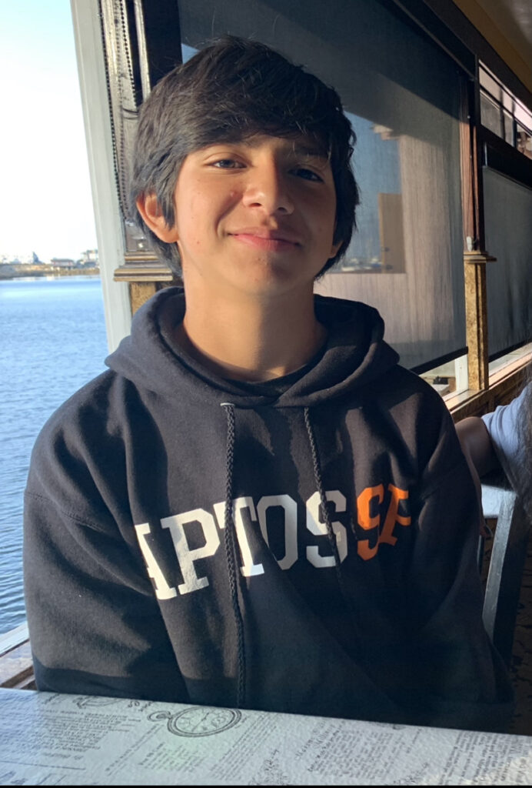

The Archives and Special Collections reading room is now open Wednesday–Friday from 9 am–noon and 1–4 pm by appointment only. For non-UCSF visitors, please see the following information:
Request materials and make appointments using our new request system; it’s easy to request materials and make reading room appointments. After an initial sign-up, you can track your requests and appointments.
The requirements for access to reading room UCSF Library facilities are currently only open to those with a UCSF ID. External researchers can make appointments to review materials in the Archives and Special Collections reading room. At the time of appointment, visitors will be met at the entrance to the library by the archives staff and accompanied to the reading room. Any individuals visiting the UCSF campus facilities are required to follow UCSF campus guest requirements.
We are excited to introduce Kathryn Stine who joined the Archives and Special Collections team as a Digital Health Humanities Program Coordinator. This position will support development and day-to-day operations of a new Digital Health Humanities Pilot. The goal of this initiative is to guide and support faculty in their engagement with digital tools and methods to facilitate interdisciplinary scholarship that will advance understanding of the profound effects of illness and disease on patients, health professionals, and the social worlds in which they live and work.
Kathryn Stine
Kathryn Stine has an extensive background in developing and providing access to digital collections. Her experience includes nearly 10 years working for the University of California system at the California Digital Library (CDL) in various roles, the most recent of which as the Senior Product Manager for Digitization & Digital Content. In that position, Kathryn managed the team that supports and coordinates the University of California Libraries’ engagement with HathiTrust and mass digitization activities.
Prior to joining CDL, Kathryn held several positions at the University of Illinois at Chicago where she was responsible for leading the university archives program and managed special collections processing.
Kathryn is deeply experienced in developing and managing cross-institutional and cross-departmental library projects and building communities across diverse functions and perspectives. Her work at CDL included managing and contributing to both investigative and operations-focused systemwide project teams, coordinating web archiving initiatives, advising for the UC Berkeley digital lifecycle program, and leading a team of developers and analysts to launch, maintain, and enhance a metadata management system for and with HathiTrust. She is motivated by supporting cross-functional teams in bringing both collaboration and creativity to common purpose.
Working with (meta)data is a throughline in Kathryn’s career, and she is enthusiastic about encouraging new ways of deriving and analyzing collections data in support of innovative digital research. In developing and providing workshops and providing project consultation, Kathryn has found working with researchers to make the most of digital collections to be incredibly rewarding. She is very excited to be joining the UCSF Library for the opportunities to work with researchers, technologists, and archivists to match health humanities research inquiry to relevant collections, digital analysis methods, and technical tools.
Kathryn loves a good metadata challenge to puzzle through, and also enjoys improvisational cooking, garment sewing, and getting outdoors with her family, especially to camp and open-water swim.
The Industry Documents Library (IDL) is excited to welcome three Data Science Fellows to our team this summer. The Data Science Fellows will be working with the IDL and with the UCSF Library Data Science Initiative (DSI) to to assess the impact of transcription accuracy on text analysis of digital archives, using the IDL collections.
Through tagging, human transcription, and computer-generated transcription, the team will assess how accuracy may differ between media or document types, and how and whether this difference is more or less pronounced in certain categories of media (for example, video recordings of focus groups, community meetings, court proceedings, or TV commercials, all of which are present in the IDL’s video collections). After identifying transcript accuracy in different media types, we aim to provide guidelines to researchers and technical staff for proper analysis, measurement, and reporting of transcript accuracy when working with digital media.
Our Junior Data Science Fellows are Rogelio Murillo and Lianne De Leon. Rogelio and Lianne are both participating in the San Francisco Unified School District (SFUSD) Career Pathway Summer Fellowship Program. This six-week program provides opportunities for high school students to gain work experience in a variety of industries and to expand their learning and skills outside of the classroom. Lianne and Rogelio will be learning about programming and creating transcription for selected audiovisual materials. The IDL thanks SFUSD and its partners for running this program and providing sponsorship support for our fellows.
Lubov McKone is our Senior Data Science Fellow and will be using automated transcription tools to extract text from audiovisual files, run sentiment and topic analyses, and compare automated results to human transcription. Lubov will also provide guidance and mentoring to the Junior Fellows.
Our Fellows have introduced themselves below. Please join us in welcoming Rogelio, Lianne, and Lubov to the UCSF Library this summer!
Hi my name is Lianne R. de Leon and I go to Phillip and Sala Burton High School as a rising senior. I love playing volleyball in my free time and you may see me at numerous open gyms around the city. In the future I hope to major in computer science or computer engineering. I’m looking forward to meeting many wonderful people here at UCSF and learning more about the data science industry from the inside.
IDL Junior Data Science Fellow Lianne de Leon
Hi, my name is Rogelio Murillo and I’m a rising junior at Ruth Asawa School of the Arts. I enjoy playing a variety of music and percussion. I’ve played Japanese Taiko, Afro Brazilian drumming, and Latin Jazz. I’m also learning guitar over the summer. I’m a responsible and respectful person.
IDL Junior Data Science Fellow Rogelio Murillo
My name is Lubov McKone and I’m currently pursuing my Masters in Library and Information Science from Pratt Institute in Brooklyn, NY. I also hold a Bachelor’s degree in Statistics, and prior to entering graduate school I worked as a data analyst in local government. My professional interests include supporting researchers in the accurate and responsible use of data, and I aspire to work as a data librarian in an academic library after graduation. Outside of work, I spend my time cooking, doing yoga, and writing music. I’m very excited to be joining the UCSF Industry Documents Library this summer, and I’m looking forward to learning more about how researchers use digital collections!
We are pleased two welcome two new interns, Tracy and Isabella, to the COVID Tracking Project Archives. Tracy will be build tools to manage our extensive digital collection, while Isabella will help assess and categorize oral histories and documents. We are happy to have the extra help!
Tracy Lee
Tracy first became interested in libraries and archives as a child exploring the History Center at the San Francisco Public Library; this interest evolved into a passion when she took a history of information course as an elective for her BA in Cognitive Science at UC Berkeley and was allowed to handle some of the oldest items in the Bancroft Library collection as part of a class assignment. After a short stint in software development and logistics roles for a couple of seed-stage startups in San Francisco, she returned to the world of libraries by completing a Certificate of Achievement in Library Information Technology at City College of San Francisco and interning at the Asian Art Museum C. Laan Chun Library. She is a current MLIS Candidate at San José State University hoping to focus on digital asset management, government information resources, and library systems.
Isabella Durgin
Isabella is currently studying English and Geography at the University of California, Los Angeles (UCLA). In addition to her studies, she is also the Music | Fine Arts Editor at the Daily Bruin, and aims to obtain her Masters in Library Science. She loves hiking, being outdoors, and improving her climbing skills.
This is a guest post by exhibit curator Sabrina Oliveros
Original engravings from the 17th through the 19th centuries. Facsimiles of masterworks by Andreas Vesalius and Leonardo da Vinci. Images produced through technologies developed at UCSF – including a three-dimensional rendering of a patient’s lungs with COVID-19.
See all these groundbreaking images from the history of medicine, and many more works of science and art, at an exhibit opening in May 2022 at the UCSF Library.
Entitled Seeing the Self Anew: How Art and Science Intersect, this exhibit uses anatomical atlases, medical artifacts, and other materials from UCSF Archives and Special Collections to explore some ways that artists and scientists have informed each other’s work when examining a common subject: the human body.
On one level, the relationship between artists and scientists is collaborative. As scientists uncover new knowledge about the body, artists put this information into visual form, recording and disseminating it.
Exhibits in the library’s main lobby feature such collaborations, which, at the times of their publications, counted as the most accurate and attractive anatomical atlases the world had seen. These include books like De humanis corporis fabrica (1543 facsimile) by Andreas Vesalius, which set new directions for the art and science of anatomy; Osteographia (1733) by William Cheselden, which showed the bones in life-like size and detail; and the pioneering manuals on obstetrics by William Hunter (1774) and William Smellie (1793 edition).
Other displays also show what is created when artists engage with the science of depicting the human body – best exemplified in the works of Albrecht Dürer and Leonard da Vinci.
More featured illustrations – like “The Flayed Angel” (1746) by Jacques Fabian Gautier d’Agoty, and fantastical skeletons by Jacques Gamelin (1779) – arguably have less instructional value for medical students. Still, they suggest how anatomical studies inspired artists to produce compelling images all their own.
Art and science also intersect in engineering, where drawings guide the design of instruments. From microscopes and stereoscopes to x-rays and MRI technology, these instruments facilitate further studies, procedures, and treatments that produce even newer images of the body.
Exhibits on the library’s fifth floor offer a glimpse into such designs. These include conceptual sketches and models envisioned by early 20th-century UCSF professionals like Verne T. Inman, Howard C. Naffziger, and Saxton T. Pope.
The fifth-floor displays are highlighted by selections from Images, the official publication of the UCSF Department of Radiology and Medical Imaging, dating from 2012 to 2021. With detail and depth that perhaps even the most accomplished early modern artist-anatomists could not have imagined, these illustrations show how far scientists have come – and how much farther they can go – in enabling us to see, and understand, our bodies and our selves anew.
The latest issue of Images magazine renders, in 3D, the lungs of a patient with COVID-19 pneumonia.
Seeing the Self Anew will be on display on two floors (third and fifth) of the UCSF Library at Parnassus through Spring 2023. UCSF Library is currently open to UCSF faculty, staff, and students via ID badge access Monday–Friday from 7:30am–6pm. Changes to in-person library access will be shared through library website as UCSF policies and guidelines are updated in the coming months.
The UCSF Archives and Special Collections is pleased to announce the completion of the Subaward: “The San Francisco Bay Area’s Response to the AIDS Epidemic: Digitizing and Providing Universal Access to Historical AIDS Records Network of the National Library of Medicine, Pacific Southwest Region Subaward: “The San Francisco Bay Area’s Response to the AIDS Epidemic: Digitizing and Providing Universal Access to Historical AIDS Records.” This project chronicles the stories of marginalized communities and communities of color during the AIDS epidemic.
African- Americans, AIDS history project — ephemera collection, MSS 2000-31, box 1, folder 3
AIDS Events Photos, San Francisco General Hospital Historical Documents, SFGH 2015-002, box 11, folder 32Lesbians, San Francisco AIDS Foundation (SFAF) records, MSS 94-60, carton 22, folder 27
In collaboration with UC Merced Library’s Digital Assets Unit, we digitized over 45,000 pages from 14 archival collections related to the early days of the AIDS epidemic in the San Francisco Bay Area. The digitized material is now accessible to the public via the California Digital Library platform, Calisphere. This new corpus includes correspondence, brochures, reports, notebooks, negatives, newspaper clips, and photographic prints. Several new digital collections have been added to our digital holdings related to AIDS history including:
Latinos, AIDS history project — ephemera collection, MSS 2000-31, box 1, folder 4
Native Americans, AIDS history project — ephemera collection, MSS 2000-31, box 1, folder 1Asian-Americans, AIDS history project — ephemera collection, MSS 2000-31, box 1, folder 2
Another accomplishment of the project was the development of an AIDS history primary source set in collaboration with Aimee Medeiros, Associate Professor of History of Health Sciences at UCSF. The primary source set titled “BIPOC Activism” highlights BIPOC activism and AIDS outreach campaigns to communities of color during the early days of the AIDS epidemic. This new educational resource and tool can be used by students, teachers, and researchers and is accessible on the archives’ website.
The Black Coalition on AIDS (BCA) records are among the AIDS community-based organizations records (MSS 98-49) housed with the UCSF Archives and Special Collections. These records were assembled as part of the UCSF AIDS History Project, acquired with the goal of documenting the beginning of the AIDS epidemic and the San Francisco community response to it.
The Black Coalition on AIDS was established in 1986 to address the needs of the African American community in the early years of the AIDS epidemic and “to ensure Black people would receive appropriate services and be adequately represented in policy decisions.” It is still active today and was renamed the Rafiki Coalition for Health and Wellness in 2015 to reflect its expanded health education and health support services.
The Black Coalition on AIDS (BCA) records housed with us include meeting minutes, handwritten notes, programs from their first two annual awards dinners, newsletters, position papers, and proposals.
The honorees featured in the annual awards dinner programs for the BCA Second Annual Awards Dinner in 1991, captured my interest. The event highlighted the achievements of African American activists from the Bay Area and since February is Black History Month, it seemed timely and fitting to share a bit of information about some of the celebrated individuals.
Ken Jones received the Calu Lester Community Activist Award for his work as the Executive Director of STOP AIDS Project, Secretary of the AIDS Life Lobby, Vice Chair of the Lesbian and Gay Caucus to the State Democratic Party, and the founder of BIKE-A-THON for AIDS among many accomplishments. Jones was a veteran of the Vietnam War. He went on to work on police reform issues in response to the 1991 Rodney King beating and in 2011, he served on the citizen review board of the BART Police Department following the BART police killing of Oscar Grant. Jones passed away last year.
Yvonne Littleton received the Individual Community Service Award for her community health outreach work for the Haight Ashbury HIV Prevention Outreach Project. In addition to her public health work and background, Littleton trained as an artist. She was one of the 7 muralists who painted the Maestrapeace Mural on the Women’s Building in the Mission District in 1994. She also worked as a commercial artist and a stage and lighting designer.
The video artist, poet, activist, and educator, Marlon Riggs received the Sylvester Arts Action Award. I was first introduced to Riggs’s work while I was working at the San Francisco Museum of Modern Art Archives. In 1992, Riggs’s Affirmations won the 2nd Society for the Encouragement of Contemporary Art Video Award. His works can be found in the collections of the Museum of Art Museum and the Whitney Museum of American Art and in recent years, several arts organizations have mounted exhibitions honoring him and his work:
Tongues Untied at the Museum of Contemporary Art in 2015
Last year, the Criterion Collection, which had in recent years come under some scrutiny for its dearth of African-American directors, released the box set of his works, The Signifyin’ Works of Marlon Riggs.
Riggs died in 1994 at the age of 37 from AIDS.
Archival records function as time capsules and allow you a glimpse into a specific moment in time and place. And how one document, an event program, can be an introduction to people and places, inviting you to move them beyond just the records. I love this about my job.
Once again we contributed to the New York Academy of Medicine’s #ColorOurCollections. We’ve created a coloring book featuring images from our collection of Japanese woodblock prints. Please download the book, color, and tweet your creations @ucsf_archives using #ColorOurCollections.
UCSF Archives and Special Collections (A&SC) has been awarded a grant from the Alfred P. Sloan Foundation to compile and archive the data products, public websites, social media, and select internal documents of The COVID Tracking Project (CTP). The project was a citizen-science initiative housed by The Atlantic magazine which tracked COVID data from March 7, 2020 to March 7, 2021. It had a tremendous impact on public, media, scientific, and governmental understanding of and response to the pandemic. This $249,866 grant will help preserve the products and culture of a unique organization created in difficult times.
Products produced by the CTP include testing, outcomes, and hospitalization data that was used by thousands of news organizations and millions of individuals to understand the early phases of the pandemic. The project’s Racial Data Tracker and Long-term Care Tracker highlighted the different ways the pandemic was impacting people of color and residents of nursing homes and similar facilities. Funding from the grant will help ensure these critical datasets are preserved in Dryad and immediately available to researchers in public health.
As an organization that existed only online, archiving the project will require new approaches to storing data from tools like Slack, Github issues, and Google drive. Unlike digital files similar to a Microsoft Word document, data in these tools have multiple levels of interface and context that is not easily preserved. The grant will support developing tools for archiving these rapidly-adopted forms of communication, and making them open source for other archiving projects.
Every datapoint collected by the project was the result of multiple discussions, revisions, and public inquiry. Capturing the entire history of say, the total number of tests in California on November 22, 2020 requires reviewing Slack threads, Github issues, emails, spreadsheet revisions, and unique tools built by tracking project members. The grant will help build a “Data Explorer” that pulls all these disparate metadata into a single web interface for researchers to understand the many contexts around every datapoint collected by the project.
“We’re extremely proud to support a digital preservation project capturing a remarkable record of online collaboration that also provides a unique blueprint for future archiving initiatives,” says Joshua Greenberg, director of the Sloan Foundation’s technology program. “The team is doing more than just creating a rich and valuable repository of a historic moment—it is generating novel and much-needed methods of storing information from modern technology platforms, an approach that will become invaluable as online collaborations increasingly become the norm.”
This 12-month project is being launched in January 2022 and will be overseen by an advisory board composed of former project staff and advisors with backgrounds in data science, medicine, history, and epidemiology. A&SC would like to thank Amanda L. French, Ph.D., former Community Lead at the COVID Tracking Project and other supporters for their help with this proposal. Kevin Miller will serve as an archive lead for this grant project
About the Sloan Foundation
The Alfred P. Sloan Foundation is a not-for-profit, mission-driven grantmaking institution dedicated to improving the welfare of all through the advancement of scientific knowledge. Established in 1934 by Alfred Pritchard Sloan Jr., then-President and Chief Executive Officer of the General Motors Corporation, the Foundation makes grants in four broad areas: direct support of research in science, technology, engineering, mathematics, and economics; initiatives to increase the quality, equity, diversity, and inclusiveness of scientific institutions and the science workforce; projects to develop or leverage technology to empower research; and efforts to enhance and deepen public engagement with science and scientists.
About UCSF Archives and Special Collections
The mission of the UCSF Archives and Special Collections is to identify, collect, organize, interpret, and maintain rare and unique material to support research and teaching of the health sciences and medical humanities and to preserve institutional memory. Please contact Polina Ilieva, Associate University Librarian for Collections with questions about this award.
UCSF Archives and Special Collections (A&SC) is excited to announce that it was awarded a grant by the National Historical Publications and Records Commission (NHPRC) in support of the project titled Pioneering Child Studies: Digitizing and Providing Access to Collection of Women Physicians who Spearheaded Behavioral and Developmental Pediatrics.
The $149,814 award will support the creation of a digital collection on Calisphere containing materials from five collections held at UCSF documenting life and work of five women physicians and social workers, Drs. Hulda Evelyn Thelander, Helen Fahl Gofman, Selma Fraiberg, Leona Mayer Bayer, and Ms. Carol Hardgrove, who were pioneers in the developmental-behavioral pediatrics research, patient care, and public-health policy. These materials will enable researchers and general public to understand evolution of social policy and cultural norms as they relate to special education, people with disabilities, and equitable access to health care.
Dr. Selma Fraiberg
In her support letter for this project Dr. Alicia F. Lieberman, the Irving B. Harris Endowed Chair in Infant Mental Health and Vice Chair for Academic Affairs at the UCSF Department of Psychiatry, and Director of the Child Trauma Research Program stressed thatthis grant is extraordinarily timely because these women physicians and social workers “have been trailblazers in creating new knowledge and revolutionizing clinical care, but their contributions are at risk of being neglected or overlooked. These five women excelled against enormous odds in fields where women had difficulty establishing their own independent contributions, and the long-term ramifications of their work continue to benefit millions of children worldwide.”
A relatively new field in medicine, developmental-behavioral pediatrics came out of an increased demand for mental health services in pediatric care starting in the 1920s. While infant and child mortality rates declined in part due to public health campaigns and medical breakthroughs, concerns over behavioral problems and developmental delays grew as pediatrics began to look beyond mere survival and started to consider the whole child.
Dr. Leona Mayer Bayer
“These five women,” saysDr.Jeffrey L. Edleson, Professor and Harry & Riva Specht Chair Emeritus in Publicly Supported Social Services in the School of Social Welfare at the UC Berkeley, “studied and practiced in the same time period and were instrumental in establishing and developing training programs for pediatricians, nurses, and social workers. All of them also published works for the general public addressing issues that emerged at that time and continue to be discussed today, including the role of the mother in the early life of the child, emotional life of children and the importance of including the whole family in pediatric patient care.
A digital collection unifying the records of these five remarkable women scholars […] will benefit historians of medicine and public health, sociologists, educators, social workers, policymakers, health care providers, patient advocates, and parents.”
Carol Hardgrove with unidentified colleagues
Documents from these five collections often illustrate the work of their creators on the same or similar projects and collaboration between the creators; these will be digitally “reunited” in the course of the grant by being posted on the same digital platform, Calisphere and being linked through extended metadata. They speak to the contribution women made early on in developmental-behavioral pediatric clinical research through the papers of Dr. Thelander. In 1952, she founded the Child Development Center at the Children’s Hospital of San Francisco where she conducted studies on children with brain-damage and general pediatric neurology. These women were influential in the training of pediatricians as documented by the records of Dr. Gofman. Since 1966 she served as a director of the Child Study Unit at UCSF, one of the first training programs in behavioral pediatrics in the US. The papers of Dr. Fraiberg document several important aspects of developmental-behavioral pediatrics, including the influence of psychoanalysis on the field and her groundbreaking work on intergenerational transmission of trauma. These women were also instrumental in the evolution of pediatric nursing. Ms. Carol Hardgrove collection documents her role as an educator with the School of Nursing and Child Care/Study Center who authored many works dealing with children and parents and the hospital experience. The collection also features professional correspondence of Dr. Leona Mayer Bayer whose life’s work was focused on child development and in particular human growth and psychology of sick children.
Dr. Hulda Evelyn Thelander
According to Dr. Andrew J. Hogan, Associate Professor and Director of the Science and Medicine in Society Program at Creighton University, “Filling in these silences and gaps in the historical records, by making available more widely their various ideas, aspirations, and institutional negotiations, will allow this story to be told in much fuller detail. Gofman, Thelander, and others’ stories are likely to inspire another generation of groundbreaking young physicians to organize care for populations in need. It will be valuable for students and researchers to learn more about the many challenges that these women physicians faced, and how they overcame them to provide improved resources and support for children with behavioral and developmental conditions and disabilities, a population that was historically overlooked in pediatrics, especially in the mid-20th century, when these women were professionally active.”
As part of this project UCSF archivists will engage with communities of women physicians, researchers, and health care providers, discussing how to document their voices that have been underrepresented, absent, or excluded from the history in general and history of their institutions (including UCSF) or professions in particular. By collecting their stories and learning how to document and share them, we will create a more inclusive and equitable historical record.
Helen Gofman, MD, playing with girl with tea set and toys
This 24-month project was launched in September and will be managed by our processing archivist, Edith Escobedo. The materials will be digitized by the UC Merced Library’s Digital Assets Unit that has been partnering with UCSF on successful collaborative digitization projects for more than 10 years.
The mission of the UCSF Archives and Special Collections is to identify, collect, organize, interpret, and maintain rare and unique material to support research and teaching of the health sciences and medical humanities and to preserve institutional memory. Please contact Polina Ilieva, Associate University Librarian for Collections with questions about this award.